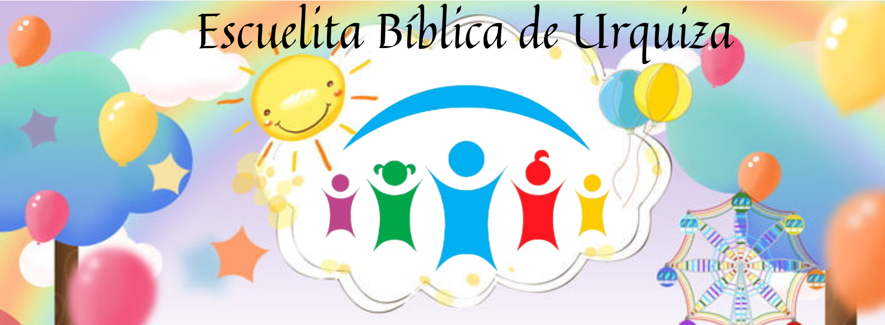
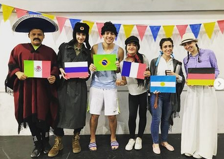
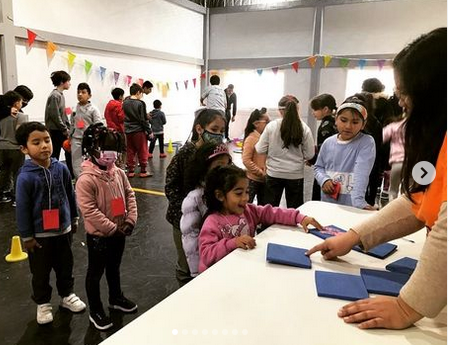
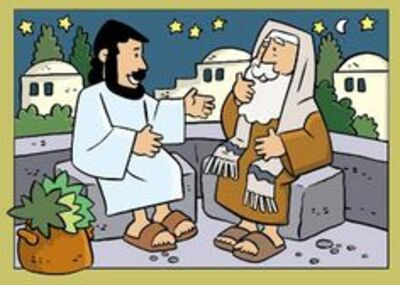
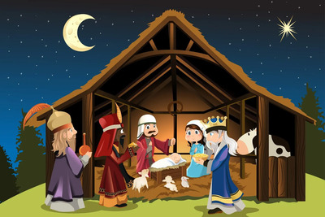
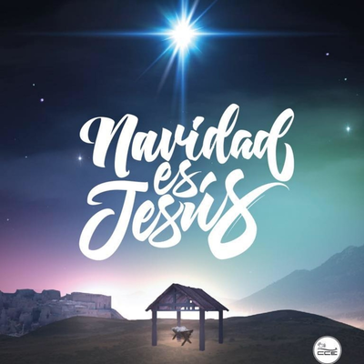
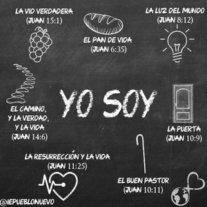

Modo Mundial


Juego en Equipo


Jesús y Nicodemo
Jesús explica que es cesesario nacer de nuevo
En este encuentro Jesús le explicó a Nicodemo que era necesario nacer de nuevo. Y cómo se hace eso?? -preguntó Nicodemo. Jesús le explicó que era un nacimiento espiritual, y mencionó las palabras del versículo más conocido: Juan 3:16.

¿Qué es la Navidad?

¡Esperando la NAVIDAD!
¡Comenzaron los preparativos!
Grandes y chicos arman el arbolito, decoran sus casas con luces y adornos, muchos escriben sus cartitas con el regalo que tanto desean, otros piensa en toda la comida que hay que preparar para esa noche..pero, ¿ese es el Verdadero Significado de la NAVIDAD?

Los Yo Soy de Jesús
"YO SOY EL BUEN PASTOR"
Parábola de la Oveja Perdida..¿Qué nos quiere decir Jesús? Que como hace un buen pastor con sus ovejas, así hace Jesús con nosotros, nos guía, nos cuida, nos alimenta, nos defiende, nos enseña y se encarga de todo lo que necesitamos. ¡Todo lo hace porque nos AMA!
Hablar de la Palabra
Debemos HABLAR la Palabra de Dios
Hoy vamos a conocer la Historia de Pablo, que habló el evangelio hasta delante de reyes. Él escribió a los romanos que no se avergonzaba del evangelio, porque es poder de Dios.
Hablaré de tus testimonios delante de los reyes, y no me avergonzaré. Salmo 119:46